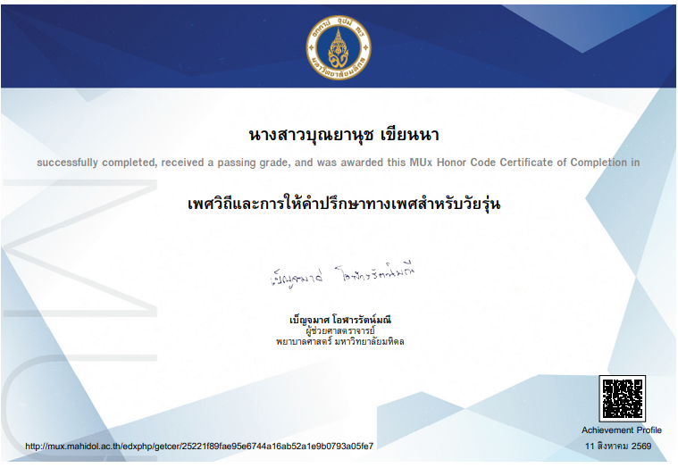
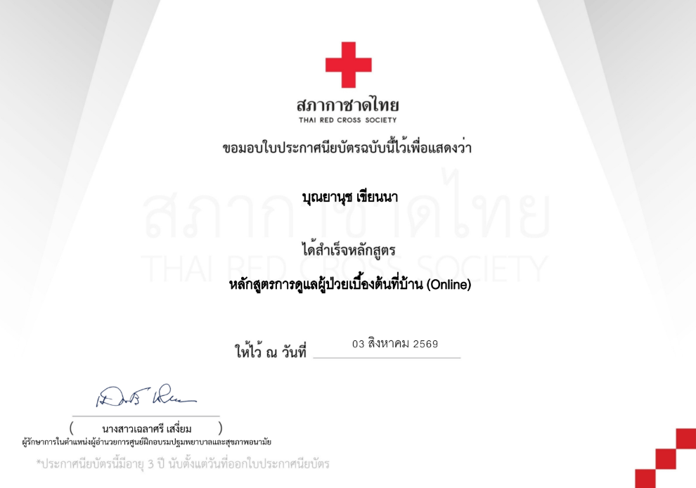
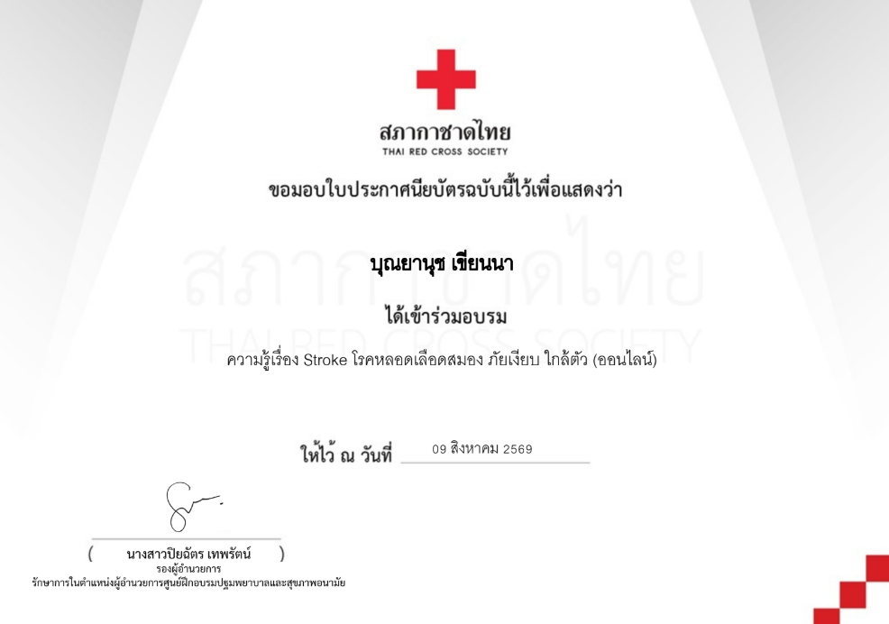
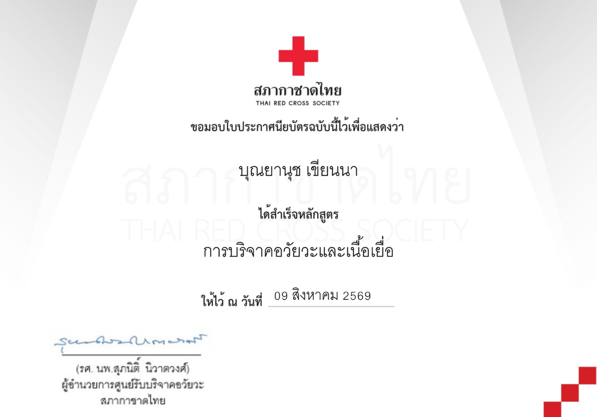
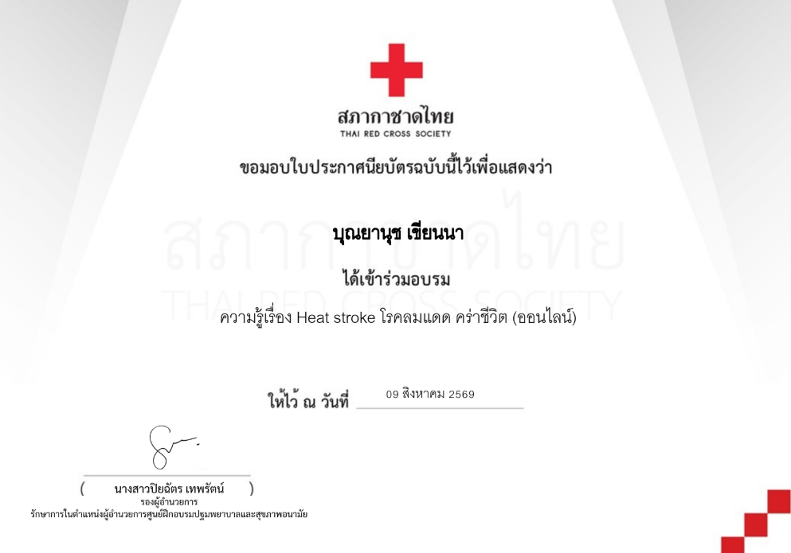
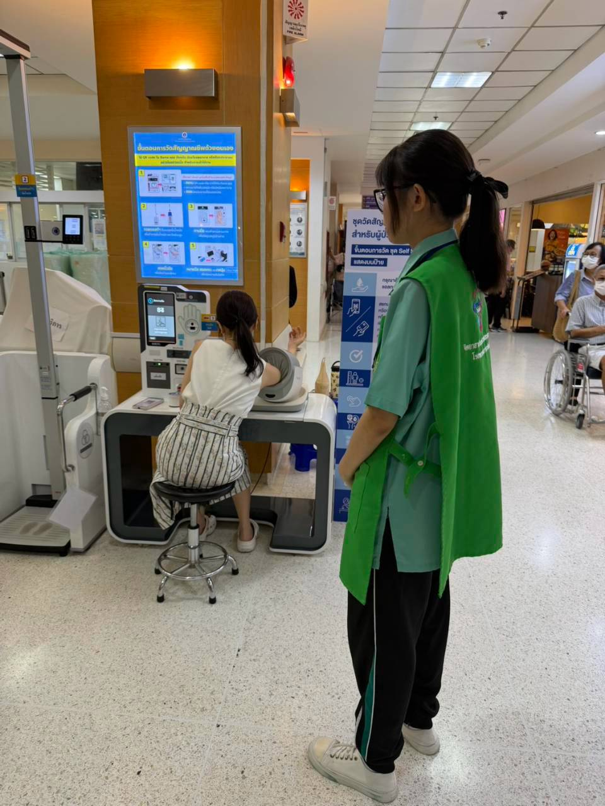

PORTFOLIO

ชื่อ-นามสกุล นางสาวบุณยานุช เขียนนา
Name Bunyanuch Keanna
Nickname Cake
ระดับชั้น มัธยมศึกษาชั้นปีที่ 6/3
แผนการเรียน วิทยาศาสตร์-คณิตศาสตร์ (MSEP)
โรงเรียนที่กำลังศึกษาอยู่ โรงเรียนบ้านบึง "อุตสาหกรรมนุเคราะห์"
คณะ-สาขาและมหาวิทยาลัยที่สนใจศึกษาต่อ คณะพยาบาลศาสตร์ สาขาพยาบาลศาสตร์ มหาวิทยาลัยมหิดล
คำนำ
แฟ้มสะสมผลงาน (Portfolio) เล่มนี้ จัดทำขึ้นเพื่อเป็นตัวแทนในการนำเสนอข้อมูลเกี่ยวกับประวัติส่วนตัว ความรู้ ความสามารถ ทักษะ และกิจกรรมต่างๆ ของข้าพเจ้า โดยเฉพาะความสนใจและความมุ่งมั่นที่มีต่อการศึกษาต่อ
ภายในแฟ้มสะสมผลงานเล่มนี้ ประกอบด้วยประวัติส่วนตัว ผลการเรียน กิจกรรมที่ข้าพเจ้าได้เข้าร่วม
ประวัติส่วนตัว
ประวัติส่วนตัว
ชื่อ-นามสกุล นางสาวบุณยานุช เขียนนา
Name Bunyanuch Keanna
ชื่อเล่น เค้ก
Nickname Cake
อายุ 17 ปี
Age 17 years old
วันเกิด 13/03/08
สัญชาติ ไทย
เชื้อชาติ ไทย
ศาสนา พุทธ
ประวัติการศึกษา
สถานศึกษา โรงเรียนบ้านบึง "อุตสาหกรรมนุเคราะห์"
แผนการเรียน วิทยาศาสตร์-คณิตศาสตร์ (MSEP)
GPAX 3.62
ผลงานและกิจกรรม

ได้รับเกียรติบัตรจากการเรียนล่วงหน้าของ MU X MOOC เรื่องเพศวิถีและการให้คำปรึกษาทางเพศสำหรับวัยรุ่น ได้รับเมื่อวันที่ 11 สิงหาคม 2569
สิ่งที่ได้รับจากการเข้าร่วมกิจกรรมนี้ คือ การดูแลและป้องกันตัวเองจากสถานการณ์ต่าง ๆ จากการมีเพศสัมพันธ์ในวัยรุ่น

ได้รับเกียรติบัตรจากสภากาชาดไทย หลักสูตรการดูแลผู้ป่วยเบื้องต้นที่บ้าน (Online) ได้รับเมื่อวันที่ 3 สิงหาคม 2569
สิ่งที่ได้รับจากการเข้าร่วมกิจกรรมนี้ คือ การดูแลผู้ป่วยติดเตียงด้วยตนเองที่บ้านให้สะอาดและปลอดภัย

ได้รับเกียรติบัตรจากสภากาชาดไทย ได้เข้าร่วมอบรมความรู้เรื่อง Stroke โรคหลอดเลือดสมอง ภัยเงียบใกล้ตัว (ออนไลน์) ได้รับเมื่อวันที่ 9 สิงหาคม 2569
สิ่งที่ได้รับจากการเข้าร่วมกิจกรรมนี้ คือ การสังเกตตนเองและคนรอบข้างเพื่อเฝ้าระวังจากโรค Stroke

ได้รับเกียรติบัตรจากสภากาชาดไทย ได้เข้าร่วมอบรมความรู้เรื่อง การดูแลสิ่งแวดล้อมและอุบัติเหตุที่พบบ่อยในผู้สูงอายุ ได้รับเมื่อวันที่ 9 สิงหาคม 2569
สิ่งที่ได้รับจากการเข้าร่วมกิจกรรมนี้ คือ การสังเกตรอบบ้านและเฝ้าระวังไม่ให้คนสูงอายุในบ้านได้รับบาดเจ็บจากสิ่งที่อาจมองข้ามใกล้ตัว

ได้รับเกียรติบัตรจากสภากาชาดไทย หลักสูตรการบริจาคอวัยวะและเนื้อเยื่อ ได้รับเมื่อวันที่ 9 สิงหาคม 2569
สิ่งที่ได้รับจากการเข้าร่วมกิจกรรมนี้ คือ การบริจาคอวัยวะและเนื้อเยื่อให้ถูกวิธีเพื่อให้มีประสิทธิภาพมากที่สุด

ได้รับเกียรติบัตรจากสภากาชาดไทย ได้เข้าร่วมอบรมความรู้เรื่อง Heat Stroke โรคลมแดดคร่าชีวิต (ออนไลน์) ได้รับเมื่อวันที่ 9 สิงหาคม 2569
สิ่งที่ได้รับจากการเข้าร่วมกิจกรรมนี้ คือ การระวังตัวเองจากโรค Heat Stroke โรคลมแดด

ได้รับเกียรติบัตรจากการเรียนล่วงหน้าของ MU X MOOC เรื่องการเลี้ยงลูกด้วยนมแม่ (Breastfeeding) ได้รับเมื่อวันที่ 12 สิงหาคม 2569
สิ่งที่ได้รับจากการเข้าร่วมกิจกรรมนี้ คือ ประโยชน์จากการให้นมแม่และข้อดีข้อเสียต่าง ๆ

ได้รับเกียรติบัตรจากการเป็นคณะกรรมการจัดกิจกรรมอบรมแกนนำจิตอาสาป้องกันเอดส์เทิดพระเกียรติพระเจ้าวรวงศ์เธอ พระองค์เจ้าโสมสวลี กรมหมื่นสุทธนารีนาถ ณ โรงเรียนบ้านบึง "อุตสาหกรรมนุเคราะห์"
วันที่ 13 - 15 กรกฎาคม 2569
สิ่งที่ได้รับจากการเข้าร่วมกิจกรรมนี้ คือ ข้าพเจ้าได้ทำจิตอาสาและรับความรู้เรื่องเอดส์ทั้งในการป้องกันและวิธีรักษาตนเองให้ห่างไกลจากโรคเอดส์
ช่องทางการติดต่อ
wakaruchidi@gmail.com
096-213-2648